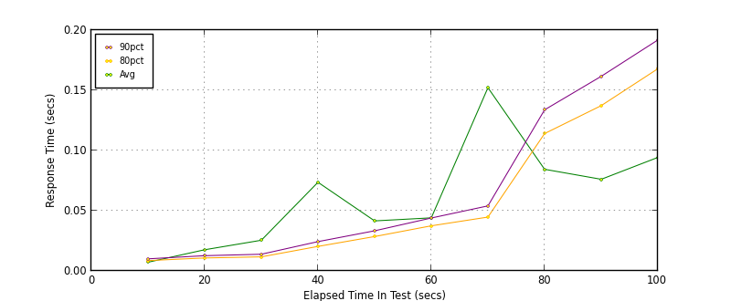
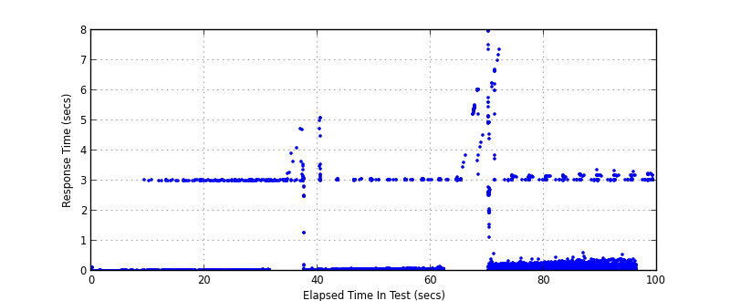
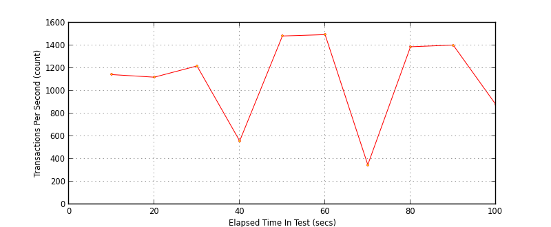
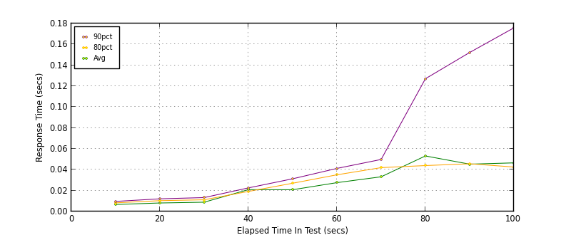
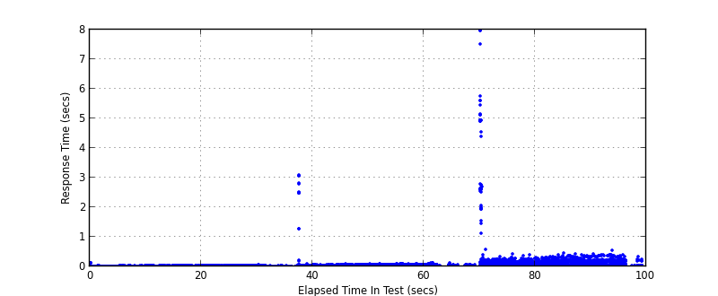
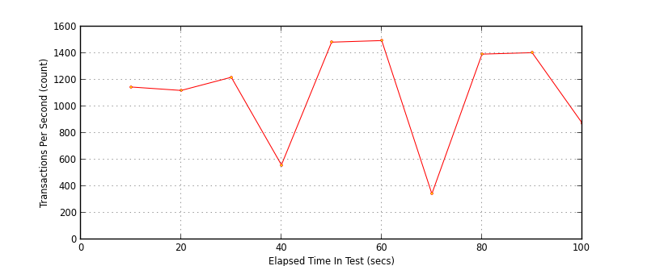

Performance Results Report
Summary
transactions: 110521
errors: 766
run time: 100 secs
rampup: 100 secs
test start: 2016-12-08 10:08:12
test finish: 2016-12-08 10:09:51
time-series interval: 10 secs
workload configuration:
| group name | threads | script name |
|---|
| user_group-1 | 20 | v_post.py |
| user_group-2 | 20 | v_post.py |
| user_group-3 | 20 | v_post.py |
| user_group-4 | 20 | v_post.py |
| user_group-5 | 20 | v_post.py |
| user_group-6 | 20 | v_post.py |
All Transactions
Transaction Response Summary (secs)
| count | min | avg | 80pct | 90pct | 95pct | max | stdev |
|---|
| 110521 | 0.004 | 0.053 | 0.033 | 0.052 | 0.147 | 7.966 | 0.290 |
Interval Details (secs)
| interval | count | rate | min | avg | 80pct | 90pct | 95pct | max | stdev |
|---|
| 1 | 11430 | 1143.00 | 0.004 | 0.007 | 0.009 | 0.010 | 0.011 | 3.016 | 0.028 |
| 2 | 11204 | 1120.40 | 0.004 | 0.018 | 0.011 | 0.013 | 0.014 | 3.028 | 0.165 |
| 3 | 12196 | 1219.60 | 0.004 | 0.025 | 0.012 | 0.014 | 0.016 | 3.025 | 0.220 |
| 4 | 5588 | 558.80 | 0.005 | 0.074 | 0.020 | 0.024 | 0.028 | 4.714 | 0.419 |
| 5 | 14833 | 1483.30 | 0.005 | 0.042 | 0.029 | 0.033 | 0.038 | 5.105 | 0.249 |
| 6 | 14954 | 1495.40 | 0.005 | 0.044 | 0.037 | 0.044 | 0.051 | 3.069 | 0.211 |
| 7 | 3487 | 348.70 | 0.006 | 0.152 | 0.045 | 0.054 | 0.067 | 6.034 | 0.697 |
| 8 | 13887 | 1388.70 | 0.005 | 0.084 | 0.114 | 0.134 | 0.146 | 7.966 | 0.401 |
| 9 | 14038 | 1403.80 | 0.005 | 0.076 | 0.137 | 0.162 | 0.179 | 3.349 | 0.251 |
| 10 | 8784 | 878.40 | 0.005 | 0.094 | 0.168 | 0.192 | 0.207 | 3.344 | 0.311 |
Graphs
Response Time: 10 sec time-series

Response Time: raw data (all points)

Throughput: 5 sec time-series

Custom Timer: POST
Timer Summary (secs)
| count | min | avg | 80pct | 90pct | 95pct | max | stdev |
|---|
| 110392 | 0.004 | 0.027 | 0.030 | 0.040 | 0.113 | 7.966 | 0.098 |
Interval Details (secs)
| interval | count | rate | min | avg | 80pct | 90pct | 95pct | max | stdev |
|---|
| 1 | 11464 | 1146.40 | 0.004 | 0.007 | 0.008 | 0.010 | 0.011 | 0.133 | 0.003 |
| 2 | 11207 | 1120.70 | 0.004 | 0.008 | 0.010 | 0.012 | 0.014 | 0.037 | 0.003 |
| 3 | 12191 | 1219.10 | 0.004 | 0.009 | 0.011 | 0.013 | 0.015 | 0.039 | 0.003 |
| 4 | 5600 | 560.00 | 0.005 | 0.021 | 0.019 | 0.023 | 0.026 | 3.082 | 0.127 |
| 5 | 14839 | 1483.90 | 0.005 | 0.021 | 0.027 | 0.031 | 0.035 | 0.081 | 0.008 |
| 6 | 14950 | 1495.00 | 0.005 | 0.028 | 0.035 | 0.041 | 0.047 | 0.100 | 0.011 |
| 7 | 3435 | 343.50 | 0.007 | 0.033 | 0.042 | 0.050 | 0.055 | 0.130 | 0.012 |
| 8 | 13931 | 1393.10 | 0.005 | 0.053 | 0.044 | 0.127 | 0.140 | 7.966 | 0.249 |
| 9 | 14041 | 1404.10 | 0.005 | 0.045 | 0.046 | 0.152 | 0.170 | 0.464 | 0.055 |
| 10 | 8734 | 873.40 | 0.005 | 0.047 | 0.043 | 0.176 | 0.194 | 0.532 | 0.062 |
Graphs
Response Time: 10 sec time-series

Response Time: raw data (all points)

Throughput: 10 sec time-series
